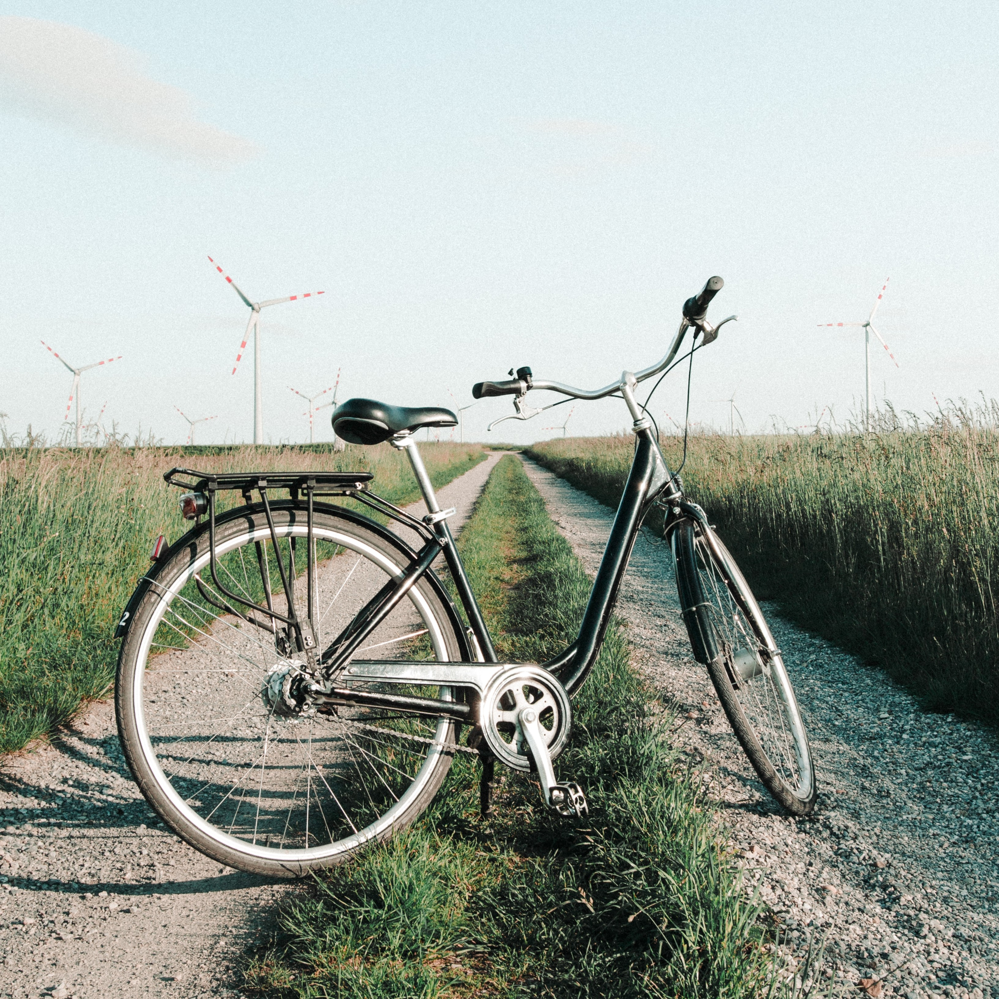
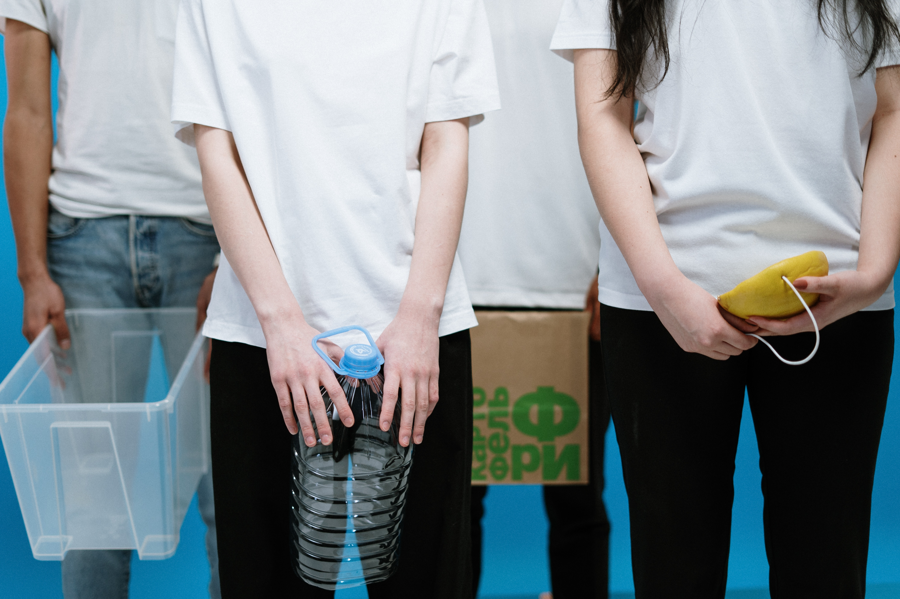

Día de la tierra: Tomemos conciencia y cuidemos nuestro planeta
Cuidar el medio ambiente y mejorar la calidad de vida está al alcance de todos. Descubre cómo hacerlo y conviértete en el referente del cambio en tu propio hogar.
Nombre Apellido| Estudiante de ciencias ambientalesEn el marco del Día de la Tierra, te voy a recomendar una lista de actividades que puedes implementar en tu vida diaria para, de acuerdo con la Organización de las Naciones Unidas (ONU), contribuir con el medio ambiente y limitar el cambio climático en la Tierra.
-
Ahorrar energía lumínica y aprovechar la luz solar
Al momento de salir de tu hogar, una acción para contribuir con el cuidado de los recursos y el medio ambiente es comprobar que las luces que no son útiles estén apagadas. Además, puedes abrir las ventanas y dejar pasar la luz solar a través de ellas para iluminar la casa durante el día.
-
Cambiar el tipo de energía administrada en el hogar
En línea con la primera recomendación, sustituir las luces de un domicilio con bombillas led es una forma de contribuir al medio ambiente y economizar el gasto de energía. Ya que iluminan más, consumen menos y se amortizan en un período más largo.
De acuerdo con ONU, gran parte de nuestra electricidad funciona a partir de carbón, petróleo y gas; lo cual afecta la emisión de dióxido de carbono (CO2) en el ambiente.
-
Desenchufar los electrodomésticos sin uso
Ahorra energía reduciendo el uso de la calefacción, el aire acondicionado, como también desenchufando los aparatos que se encuentran en desuso, pero aún consumen energía con sus luces parpadeantes encendidas, relojes o censores de control remoto.
-
Alternar los métodos de transporte
Puedes alternar el uso de un vehículo personal con tracción a diésel o gasolina realizando trayectos cortos a pie o en bicicleta, esto reduce las emisiones de gases de efecto invernadero y mejora el rendimiento de tu salud al hacer ejercicio físico.
ONU explica que utilizar un automóvil de manera consciente, sustituyéndolo incluso con la utilización del transporte público para trayectos más largos, puede reducir la huella de carbono en hasta 2 toneladas de CO2 al año.
 -
Consumir más verduras y productos agro sustentables
En principio, los productos agroecológicos no utilizan fertilizantes ni otros productos contaminantes en su etapa de producción. Además, ONU sugiere comer más verduras, frutas, cereales integrales, legumbres, frutos secos y semillas, y menos carne y productos lácteos, ya que esto puede reducir considerablemente el impacto medioambiental.
-
Separar residuos, reparar y reciclar
La Asamblea a cargo de la Agenda 2030 para el Desarrollo Sostenible advierte que todo elemento consumido por el ser humano genera emisiones de carbono en cada eslabón de la cadena de producción (electrodomésticos, ropa, artículos varios). Es por esto que ONU sugiere enmendar prendas que aún sirven, realizar compras a conciencia de las necesidades personales y reciclar aquello que ya no se utiliza.
Además, las personas pueden reciclar la basura separando los desechos en orgánicos (alimentos), no orgánicos (papeles) y plásticos.
 -
Utilizar menos plástico
Una forma de utilizar menos plástico es llevar bolsas de tela, arpillera o reutilizar bolsas de plástico al momento de ir a comprar. Cada vez son más los supermercados que venden bolsas para evitar su uso y generar un gasto excedente al cliente y fomentar su reciclado, indica ONU.
-
Desperdiciar menos comida
“Cuando tiras comida, también desperdicias los recursos y la energía que se utilizaron para cultivarla, producirla, envasarla y transportarla”, afirma el Organismo Internacional. Los alimentos en descomposición, al igual que los desechos de animales, producen un gas de efecto invernadero llamado metano.
-
Abonar los residuos orgánicos
Reutilizar los desechos alimenticios y animales en la producción de abono es un método efectivo que ONU recomienda para desperdiciar menos comida y compostar las plantas de un hogar de manera natural. Disminuir los residuos de los alimentos puede reducir la huella de carbono en hasta 300 kilogramos de CO2 al año.
-
Plantar árboles y sembrar
Las plantas son fuente natural de vida y producen el oxígeno que respiran los seres vivos en la Tierra. Son esenciales para la naturaleza, por lo tanto, ONU recomienda plantar un árbol o arbustos en tu hogar y/o en la comunidad donde vives.